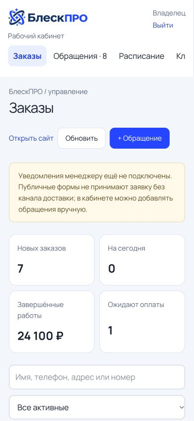
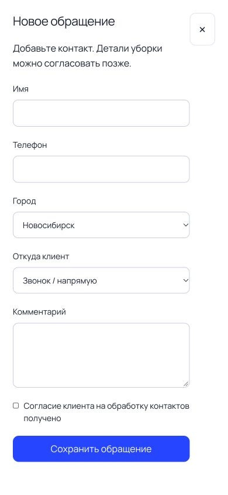
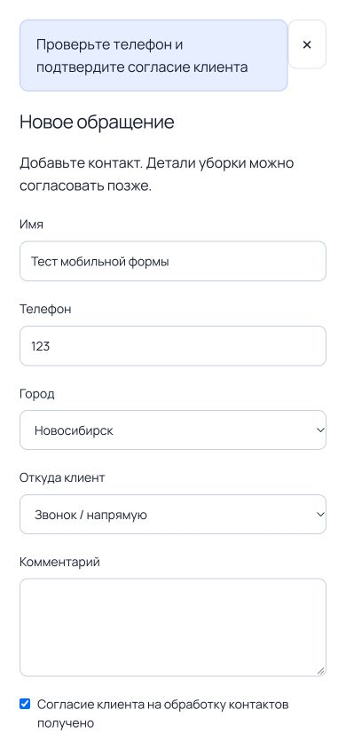
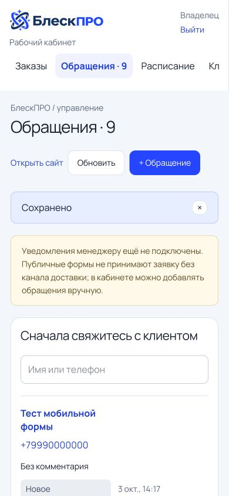
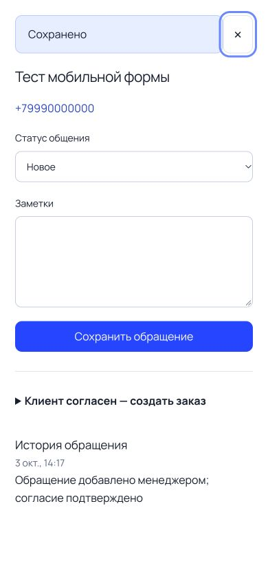

Мобильный сценарий CRM: обращение
Проверка 3 октября 2026. Локальная версия 1fc92e5, браузер Codex, 390 × 844. Только синтетические данные. Цель: открыть форму, восстановиться после ошибки и найти сохранённое обращение.
Итог: основной сценарий работает, но клавиатурный фокус и возврат после сохранения требуют исправления. Это не заключение о полной доступности или готовности всей платформы.

1. Вход в CRM — работает
Навигация, создание обращения, обновление и поиск доступны. На ширине 390 px поля не обрезаются.
Значительную часть первого экрана занимают показатели и предупреждение о неподключённых уведомлениях; список заказов ниже первого экрана. Проверен только этот размер, не все устройства.

2. Открытие формы — работает
Поля и кнопка сохранения видимы, фокус при открытии установлен на закрытие. Обязательные поля имеют подписи. Крупная кнопка сохранения легко различима.
Экранная клавиатура телефона не проверена: использовался браузер с изменённым размером, а не физический телефон.

3. Неверный телефон — восстановление работает, подсказка требует улучшения
Введён телефон «123»: сохранение отклонено, имя и согласие остаются в форме. После замены на тестовый российский номер отправка успешна.
Сообщение предлагает подтвердить согласие, хотя оно уже отмечено. Ошибка не привязана к полю телефона, фокус после запроса остаётся вне поля. Рекомендуется точная подпись ошибки и перевод фокуса к неверному полю.

4. Сохранение и поиск — сохранено, переход неудобен
Счётчик вырос с 8 до 9. Новое обращение присутствует в списке. Для этого снимка вручную выбран раздел «Обращения».
Сразу после сохранения интерфейс оставался в разделе «Заказы», из которого открыли форму. Лучше показать новое обращение либо перевести в список обращений с очисткой прежнего поиска. После закрытия карточки фокус не возвращается к кнопке, которая её открыла.

5. Карточка и клавиатура — подтверждён дефект
Имя и история создания отображаются. Блок создания заказа закрыт. При Shift+Tab с кнопки закрытия фокус остаётся на ней — подтверждено состоянием accessibility tree и DOM.
Причина в CrmWorkspace.tsx: ручной обход фокуса выбирает все button/input/select/textarea/a, включая содержимое закрытого details, но не включает summary. Рекомендуется учитывать видимость, закрытые details и summary, возвращать фокус инициатору и проверять прямой и обратный Tab при обоих состояниях блока.
Следующая проверка после исправления
- Tab и Shift+Tab по видимым элементам закрытой и раскрытой карточки.
- Возврат фокуса после закрытия и успешного сохранения.
- Точное сообщение для неверного телефона, связь с полем, сохранность остальных данных.
- Переход к новому обращению независимо от исходного раздела и поиска.
Ограничения: не проводились тесты экранным диктором, контрастомером, на физическом телефоне или при 200% масштабе. Не проверены все разделы CRM и редактор CMS. Рабочая база не изменялась; создано одно локальное тестовое обращение «Тест мобильной формы». Скриншоты сохранены непосредственно из текущего браузерного прохода и затем открыты с диска для проверки.